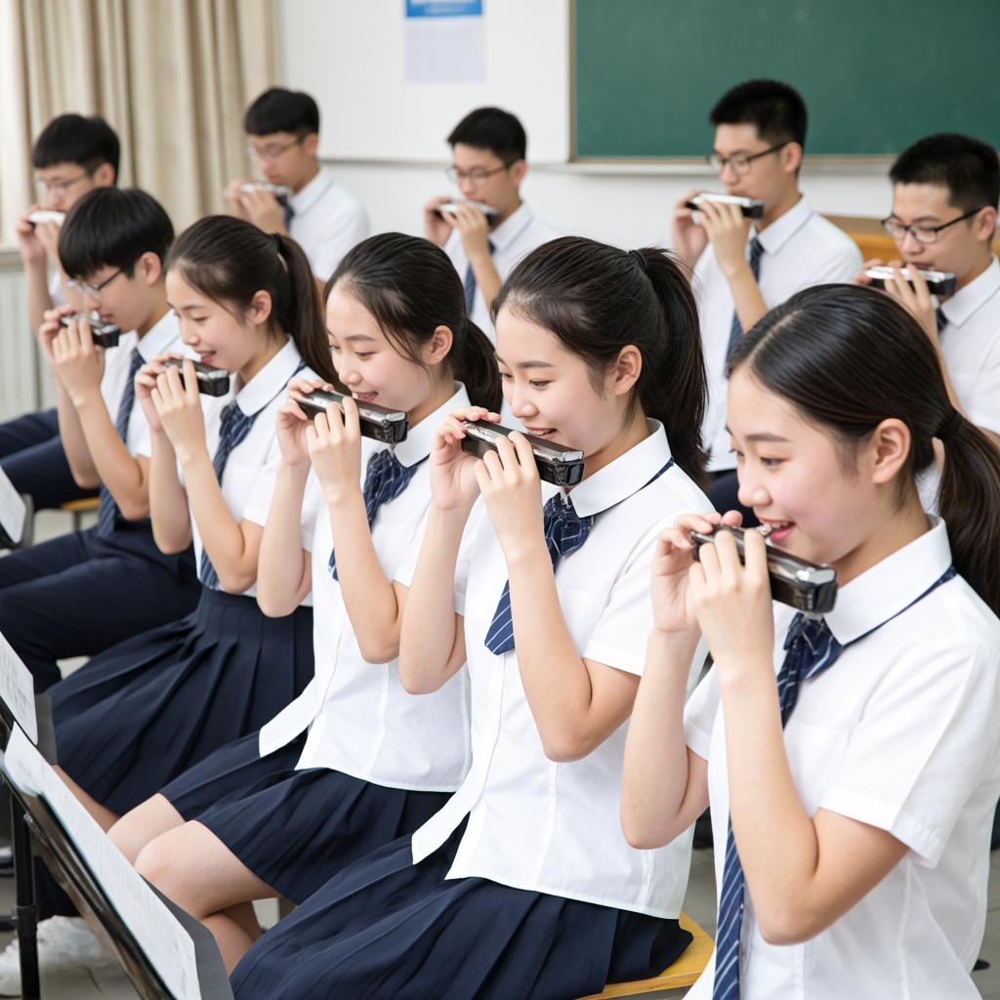

重获新成口琴社团是校内聚焦口琴艺术的新兴活力社团，以“以琴会友，以乐传情”为核心宗旨，为所有热爱口琴的同学搭建无门槛交流平台。无论你是从未接触过口琴的新手，还是有基础的爱好者，都能在这里找到志同道合的伙伴，共同探索口琴的独特魅力。
社团配备专业口琴器材（含复音、半音阶、十孔等多种类型）供社员免费试用，设有专属活动场地，每周一至周日固定开放，满足日常练习需求。我们摒弃复杂门槛，只要你对音乐抱有热忱，哪怕不会识谱，也能加入从零学起——钢琴十级以上的学长学姐跨界指导，结合口琴演奏特性，从气息控制、指法练习到识谱技巧，手把手帮你攻克难点，稳步提升演奏水平。
社团活动兼顾基础提升与趣味体验：常规活动包括“每日开放练习场”，自由预约练习时段，学长学姐轮值答疑；“每周技巧训练营”分初、中、高级班，初级聚焦基础入门，中级强化演奏熟练度，高级探索曲目改编与情感表达。特色活动亮点十足，每学期两场“琴韵专场分享会”，鼓励社员登台展示，独奏、合奏、口琴弹唱等形式不限，让你在掌声中收获自信；“跨校口琴联谊”联动周边高校社团，开展曲目交流、技巧切磋活动，拓宽音乐视野；“公益演奏行”走进社区、校园角落，用《茉莉花》《卡农》等经典曲目传递温暖，让口琴之声触达更多人。
我们整理了超300份口琴专属乐谱资源，涵盖经典民谣、流行金曲、影视原声等多种风格，社员可免费借阅。同时，社团定期组织“口琴电影赏析”“创意曲目改编工坊”等趣味活动，让音乐学习不再枯燥。加入我们，你能收获专业的练习资源、一对一指导、登台表演机会，更能结识一群热爱音乐的挚友。许多社员从这里起步，不仅学会了弹奏心仪曲目，还找到了缓解学业压力的方式，在口琴的悠扬旋律中遇见更好的自己。
如果你也想让指尖与气息交织出动人旋律，在小巧的口琴中感受音乐的无限可能，就来加入重获新成口琴社团吧！在这里，热爱是唯一的通行证，让我们一起用悠扬琴声点亮校园时光。
社团活动围绕“夯实基础、多元展示、以乐会友”核心，为不同阶段社员打造专属成长路径，让每一份对音乐的热爱都能找到表达出口。日常练习中，“每日开放练习场”全天候开放，社员可自由预约时段，配备复音、半音阶、十孔等多种口琴供试用，钢琴十级以上学长学姐轮值坐班，针对气息控制、单音吹奏、和弦转换等口琴核心技巧提供一对一答疑，帮新手快速入门，让进阶者突破瓶颈。“每周分级训练营”精准适配不同水平：初级班从识谱、气息训练、基础指法教起，循序渐进打牢根基；中级班聚焦曲目熟练度提升、节奏把控与简单情感表达；高级班则深入探索曲目改编、即兴演奏与合奏编排，助力社员形成个人演奏风格。
特色活动精彩纷呈，每学期两场“琴韵专场展演”不设门槛，无论是刚学会《小星星》的新手，还是能演绎《卡农》《茉莉花》的进阶者，都能以独奏、双人合奏、口琴弹唱、多声部重奏等形式登台，我们会搭配简易舞台布置与音效支持，让你在掌声中收获自信与认可。“跨校口琴联谊活动”已联动周边5所高校社团，通过线上合拍、线下同台演出、技巧研讨会等形式，交流经典曲目录制经验、流行曲目改编思路，拓宽音乐视野的同时结识志同道合的琴友。“公益演奏行”走进社区公园、校园角落、养老服务中心，用《送别》《菊次郎的夏天》等治愈曲目传递温暖，让小巧的口琴成为连接心灵的纽带。
此外，还有丰富的趣味互动活动增添学习乐趣：“音乐盲盒挑战”随机抽取经典曲目片段，考验社员即兴改编与快速适应能力；“影视原声演奏会”围绕《哈利波特》《千与千寻》等热门作品，组织社员还原配乐精髓，搭配剧情分享与现场互动，让音乐与故事深度融合；“乐谱资源分享会”定期更新超300份专属乐谱，涵盖民谣、流行、古典、动漫原声等风格，同时传授乐谱标记、简化改编技巧，帮社员积累专属曲库。无论你想扎实练琴提升技艺、登台展示自我，还是单纯以琴会友放松身心，这些活动都能让你在悠扬琴声中收获成长与快乐。
| 口琴社2025年春季学期活动安排表 | |||
|---|---|---|---|
| 活动名称 | 活动时间 | 活动地点 | 负责人 |
| 新成员见面会 | 3月第2周 周五 | 学生活动中心 音乐教室 201 | 张一 |
| 口琴基础教学公开课 | 3月第3周 周六下午 | 张二 | |
| 跨校口琴联谊活动 | 4月第2周 周日 | 操场东侧草坪 | 张三 |
| 音乐盲盒挑战 | 6月第1周 周六晚 | 大学生活动中心 大礼堂 | 张四 |
自成立以来，重获新成口琴社团始终以音乐为纽带，见证着无数社员的蜕变与绽放，也留下了诸多温暖而闪耀的瞬间。在社员成长路上，有零基础的同学从“不会识谱、气息不稳”起步，通过每周训练营的系统学习和日常练习场的反复打磨，仅用一学期就登上专场展演舞台，完整演绎《送别》《茉莉花》等经典曲目，用坚持收获全场掌声；有热爱改编的社员，将《稻香》《七里香》等流行金曲融入口琴特色，创新编排的双人合奏曲目在跨校联谊中斩获好评，成为社团的“招牌作品”；更有社员在公益演奏行中，用悠扬的《菊次郎的夏天》打动养老院的老人，用简单纯粹的旋律传递温暖，让口琴成为连接心灵的桥梁。
舞台之上，每一次演出都是风采的绽放。“琴韵专场展演”中，社员们身着统一服饰，或独奏时沉浸投入，让旋律随气息流淌；或合奏时默契配合，多声部旋律交织出动人乐章；口琴弹唱环节更将氛围推向高潮，搭配吉他伴奏的《后来》《小幸运》引发全场大合唱，成为校园里难忘的音乐记忆。跨校联谊活动中，我们与兄弟高校社团同台竞技，改编版《卡农》的多声部重奏、十孔口琴演绎的蓝调曲目，展现了社团的专业实力，也收获了其他高校的认可与赞誉。公益演出的现场，小巧的口琴被社员们带到街头巷尾、养老服务中心，简单的设备、纯粹的旋律，吸引路人驻足聆听，不少老人跟着哼唱，眼角泛起感动的泪光，这些瞬间都成为社团最珍贵的回忆。
除了舞台风采，社团的成果也在不断沉淀。我们整理了社员演出精选视频合集，收录了从新手入门到进阶展演的精彩片段，记录每一次进步与突破；汇编了《社员原创改编乐谱集》，收录近50首社员自主改编的曲目，涵盖流行、民谣、影视原声等风格，成为社团专属的文化财富。此外，社团多次参与校园文化节、社团成果展等活动，凭借独特的口琴表演成为现场亮点，连续两年获评“校园人气社团”称号，这些荣誉既是对我们的肯定，也是全体社员共同努力的见证。
这些风采背后，是社员们对音乐的热爱，是彼此陪伴的温暖，也是社团稳步成长的印记。未来，我们期待更多热爱口琴的同学加入，一起创造更多精彩瞬间，让口琴的旋律响彻校园，让每一份热爱都能在这里绽放光芒。
点击图片可跳转

从“气息不稳”到舞台主角——李同学的入门蜕变
作为纯零基础的工科生，李同学加入社团时甚至不会识谱，第一次拿起口琴连单音都吹不连贯，气息控制更是屡屡出错。但他抱着“想让指尖吹出喜欢的旋律”的简单想法，坚持每周打卡训练营，课后跟着学长学姐分享的教学视频反复练习，遇到气息不稳、指法僵硬的问题，就趁练习场开放时主动请教。从《小星星》到《送别》，从单音吹奏到简单合奏，三个月的坚持让他逐渐找到节奏，半年后更是勇敢报名了专场展演。站上舞台的那一刻，当《菊次郎的夏天》温柔的旋律从口琴中流淌而出，全场的掌声让他热泪盈眶。“原来只要坚持，零基础也能拥有属于自己的音乐舞台”，如今的李同学不仅能熟练演绎多首经典曲目，还成为了初级班的辅助指导，帮更多新手迈出第一步。
以琴传情，收获温暖——张同学的公益之路
张同学加入社团的初衷很简单：“想让音乐给更多人带去快乐”。她从基础班起步，认真学习每一个技巧，只为能在公益演奏中呈现更好的效果。第一次参加社区公益演出时，她还略显紧张，当看到老人们跟着《茉莉花》的旋律轻轻哼唱，眼角露出笑容，她瞬间感受到了口琴的力量。此后，她每次都主动报名“公益演奏行”，无论是走进养老服务中心，还是在校园角落开展快闪演出，她总能用温柔的旋律打动听众。有一次在特殊教育学校，一个孩子拉着她的衣角，用稚嫩的声音说“姐姐吹的歌真好听”，让她更加坚定了“以琴传情”的想法。“口琴很小，却能装下大大的温暖”，现在的张同学不仅是公益活动的常客，还带动身边的社员一起参与，用悠扬的琴声为更多人带去慰藉与快乐，也在传递温暖的过程中，收获了前所未有的成就感。
在重获新成口琴社团，这样的故事还有很多。每一位社员都带着不同的初心而来，却在悠扬的琴声中收获了相同的成长与温暖。这里没有高低之分，只有对音乐的纯粹热爱，只要你愿意迈出第一步，就能在这里遇见更好的自己，书写属于你的口琴故事。
如果你也被口琴的悠扬旋律打动，渴望在音乐中收获成长与伙伴，不妨即刻填写下方报名表，加入重获新成口琴社团！报名流程简洁无门槛，只要你热爱音乐、愿意参与社团活动，就能成为我们的一员～
注意事项
1. 报名后1-3个工作日内，社团工作人员将通过QQ/微信联系你，邀请加入社团官方交流群，后续活动通知、资源分享等均将在群内发布，请保持通讯畅通；
2. 无口琴的同学无需担心，社团将提供免费试用器材，待确定学习方向后，可咨询学长学姐获取选购建议，避免盲目消费；
3. 若填写或提交过程中遇到问题，可添加社团负责人微信咨询：【此处填写负责人微信号】，备注“口琴社报名+姓名”即可；
音乐不设限，热爱不等待！赶紧填写报名表，和我们一起在口琴的世界里，用旋律书写青春故事吧～